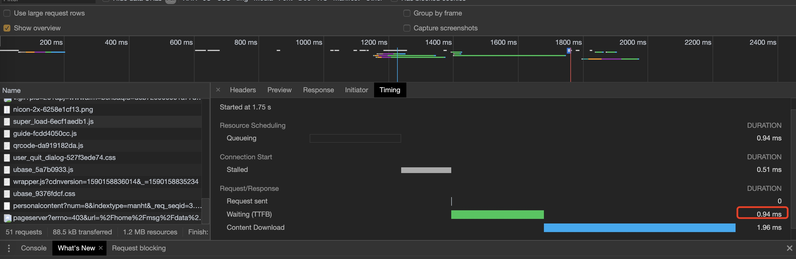

整理一下常用测试，有助于分析问题。
ab工具
参数说明
-n //在测试会话中所执行的请求个数。默认时，仅执行一个请求
-c //一次产生的请求个数。默认是一次一个。(如果请求的总数是1000,请求的总用户是10,那么平均每个用户执行100次请求)
-t //测试所进行的最大秒数。其内部隐含值是-n 50000。它可以使对服务器的测试限制在一个固定的总时间以内。默认时，没有时间限制。
-p //包含了需要POST的数据的文件.
-T //POST数据所使用的Content-type头信息
-v //设置显示信息的详细程度 – 4或更大值会显示头信息， 3或更大值可以显示响应代码(404, 200等), 2或更大值可以显示警告和其他信息。
-V //显示版本号并退出。
-w //以HTML表的格式输出结果。默认时，它是白色背景的两列宽度的一张表。
-i //执行HEAD请求，而不是GET。
-x attributes String to insert as table attributes//
-y attributes String to insert as tr attributes//
-z attributes String to insert as td or th attributes//
-C attribute Add cookie, eg. ‘Apache=1234. (repeatable)//-C cookie-name=value 对请求附加一个Cookie:行。 其典型形式是name=value的一个参数对。此参数可以重复。
-H attribute Add Arbitrary header line, eg. ‘Accept-Encoding: gzip’Inserted after all normal header lines. (repeatable)
-A attribute Add Basic WWW Authentication, the attributesare a colon separated username and password.
-P attribute Add Basic Proxy Authentication, the attributesare a colon separated username and password.//-P proxy-auth-username:password 对一个中转代理提供BASIC认证信任。用户名和密码由一个:隔开，并以base64编码形式发送。无论服务器是否需要(即, 是否发送了401认证需求代码)，此字符串都会被发送。
-X proxy:port Proxyserver and port number to use-V Print version number and exit-k Use HTTP KeepAlive feature
-d Do not show percentiles served table.
-S Do not show confidence estimators and warnings.
-g filename Output collected data to gnuplot format file.
-e filename Output CSV file with percentages served
-h Display usage information (this message)//-attributes 设置 属性的字符串. 缺陷程序中有各种静态声明的固定长度的缓冲区。另外，对命令行参数、服务器的响应头和其他外部输入的解析也很简单，这可能会有不良后果。它没有完整地实现 HTTP/1.x; 仅接受某些’预想’的响应格式。 strstr(3)的频繁使用可能会带来性能问题，即, 你可能是在测试ab而不是服务器的性能。
常用方法
ab -c 100 -n 100 http://wxpush.xx.com
结果说明
Server Software: 测试服务器的Web服务器软件名字
Server Hostname: 请求的域名
Server Port: 测试的访问端口
Document Path: 请求URL的绝问文件路径
Document Length: 表示HTTP相应的正文的长度
Concurrency Level: 标识并发的用户数(-c属性来设置)
Time taken for tests: 执行完所有的请求所花费的时间Complete requests: 表示测试的总请求数
Failed requests: 失败的请求
Total transferred: 表示所有请求的响应数据的总和,包含头信息和正文长度.
HTML transferred: 表示所有请求中响应数据的正文长度 (不包含头信息的长度)
Requests per second: 这个就是我们要的吞吐率,表示每秒处理的请求数
Time per request: 表示每个用户平均等待的时间. 等于 Time taken for tests / (Complete requests / Concurrency Level)
Time per request:(mean, across all concurrent requests) 服务器平均请求处理的时间. 正是吞详细地址的倒数，为：Time per request / Concurrency Level 每个请求花费了多少秒.
Transfer rate: 这些请求在单位内,从服务器获取的数据长度. 等于: Total transferred / Time taken for tests
Percentage of the requests served within a certain time (ms): 这部分数据用于描述每个请求处理时间的分页情况,百分之五十不超过183毫秒,. 百分之九十不超过249毫秒,百分百不超过374毫秒
siege工具
使用方法
siege -c 并发数 -t 运行测试时间 URL
如：
siege -c 1000 -t 5s URL
这里要注意的是-t后面的时间要带单位，s表示秒，如果不带，就是分钟，分钟的单位，还是挺长的，所以要注意一下。
结果说明
Transactions: 30000 hits //完成30000次处理
Availability: 100.00 % //100.00 % 成功率
Elapsed time: 68.59 secs //总共使用时间
Data transferred: 817.76 MB //共数据传输 817.76 MB
Response time: 0.04 secs //响应时间，显示网络连接的速度
Transaction rate: 437.38 trans/sec //平均每秒完成 437.38 次处理
Throughput: 11.92 MB/sec //平均每秒传送数据
Concurrency: 17.53 //实际最高并发连接数
Successful transactions: 30000 //成功处理次数
Failed transactions: 0 //失败处理次数
Longest transaction: 3.12 //每次传输所花最长时间
Shortest transaction: 0.00 //每次传输所花最短时间
webbench工具
使用方法
webbench -c 1000 -t 60 url
相关参数
每秒钟响应请求数：24525 pages/min，每秒钟传输数据量20794612 bytes/sec.
并发1000运行60秒后产生的TCP连接数12000多个,已经显示有87个连接failed了，说明超负荷了。
-n总请求 -c总次数
jmeter
相对专业的工具，有一定学习成本
需要java jdk环境。
下载之后，进入bin文件夹
sh jmeter
即打开工具
使用chome开发者工具
使用开发者工具

查看网络timing的waiting等参数，即可判断网络顺畅度。
使用第三方监测工具
例如监控宝等，查看全国各地的联通情况。
常见问题
ab socket: Too many open files (24)
[error] Host not found: xx.cn
[error] descriptor table full sock.c:133: Too many open files
使用测试工具的机器或远程服务器，都需要加大进程使用数
即mac本地也要ulimit -n 一下，不然是并发测试不了的
可查看当前限制数
ulimit -a
ulimit -n
设置数
ulimit -n 65535
个性/etc/sysctl.conf
#该参数设置系统的TIME_WAIT的数量，如果超过默认值则会被立即清除
net.ipv4.tcp_max_tw_buckets = 20000
#定义了系统中每一个端口最大的监听队列的长度，这是个全局的参数
net.core.somaxconn = 65535
#对于还未获得对方确认的连接请求，可保存在队列中的最大数目
net.ipv4.tcp_max_syn_backlog = 262144
#在每个网络接口接收数据包的速率比内核处理这些包的速率快时，允许送到队列的数据包的最大数目
net.core.netdev_max_backlog = 30000
#能够更快地回收TIME-WAIT套接字。此选项会导致处于NAT网络的客户端超时，建议为0
net.ipv4.tcp_tw_recycle = 0
#系统所有进程一共可以打开的文件数量
fs.file-max = 6815744
#防火墙跟踪表的大小。注意：如果防火墙没开则会提示error: "net.netfilter.nf_conntrack_max" is an unknown key，忽略即可
net.netfilter.nf_conntrack_max = 2621440
sysctl -p即可生效。